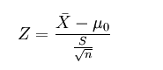

Z检验、T检验、卡方检验和fish检验的差别：
什么是Z检验
当已知标准差时，验证一组数的均值是否与某一期望值相等时，用Z检验。
另外，对于Z检验我国的统计学教材大多采用U检验的说法。而国外英文统计学书籍，大多采用Z检验。
第一步：建立虚无假设，即先假定两个平均数之间没有显著差异，
1、如果检验一个样本平均数（X）与一个已知的总体平均数(μ0)的差异是否显著。其Z值计算公式为：

其中：
X是检验样本的平均数；
μ0是已知总体的平均数；
S是样本的标准差；
n是样本容量。
2、如果检验来自两个的两组样本平均数的差异性，从而判断它们各自代表的总体的差异是否显著。其Z值计算公式为：

其中：
X1,X2是样本1，样本2的平均数；
S1,S2是样本1，样本2的标准差；( S1,S2是样本1，样本2的标准差的平方，这里图中有错，务必注意)
n1,n2是样本1，样本2的容量。
第三步：比较计算所得Z值与理论Z值，推断发生的概率，依据Z值与差异显著性关系表作出判断。

什么是T检验
T检验，亦称student t检验（Student's t test），主要用于样本含量较小（例如n<30），总体标准差σ未知的正态分布资料。T检验是用于小样本（样本容量小于30）的两个平均值差异程度的检验方法。它是用T分布理论来推断差异发生的概率，从而判定两个平均数的差异是否显著。

其中：
X：样本均值
u：总体均值
S：标准差
x：样本总量
自由度v=n-1

什么是卡方检验

什么是fish检验